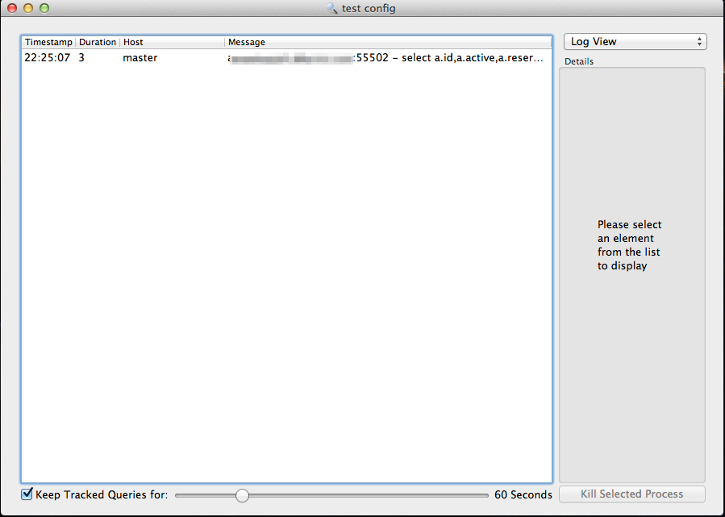
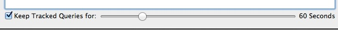
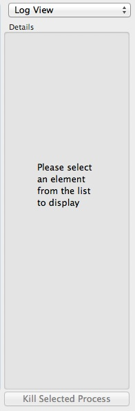
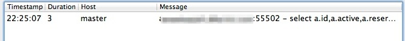
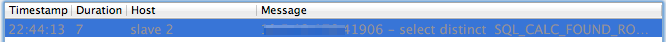
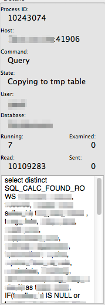
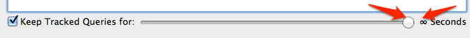
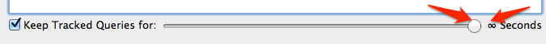

Using the Event Log Viewer
Once you have completed the configuration of at least one pool and set something to active, you can immediately begin using the main log viewer.
Once you've loaded the log viewer, you should see a screen that looks something like this:

Let's break down this screen into its individual components:
- The Tracking Bar: a simple way to configure how long you want to keep tracked queries around.
 - The Details Pane: a place to inspect (and potentially kill) queries that are running on your cluster.
 - The Event Log Window: The Main Event - where all of the log entries are displayed for you to browse.

Using the Event Log
Let's start with the meat and potatoes: the Event Log Window. Mostly self explanitory. There is a timestamp, the duration of the event that you're watching, the hostname (or host alias, in this case), and the message string that goes along with that log entry.


We can see in the message for a slow query (This one happened at 22:44:13 and lasted for 7 seconds) that on host slave 2, running from XXX host (I've obscured it in this screenshot) on port 41906, that a select query maybe wasn't the most optimized in the world. If you select the query (even if it has turned gray, more on that later) you can then see information about it pop up in the details pane.
Here we can get some information on how many rows it read, what the process id was, what user and database it was on, what host it was from, and the full text of the query. Though obscured, you can see that this one is a pretty long query, and form the State it was in during the last snapshot, it had to create a temporary table, and it had to read over 10 million rows. No wonder it took so long! Well, now we have a query from our production infrastructure that we should potentially investigate to see about optimizing!
Now, in this specific example the item has turned gray. This means that it has been selected to be tracked by the application. There are three colors that you might see in your Log Events screen. The normal color is black. Black means that it's worth displaying because it's passed the display threshold (default is 1 second). Red means that it has passed the tracking threshold and it is still active (default tracking threshold is 5 seconds). These values are configured in the configuration panel. The final color that it
can turn is gray. Items turn gray once they have passed the tracked query threshold, and are kept around for a period of time that you define using the Tracking Bar at the bottom of the window. You can keep queries around indefinitely by checking the box on the left (to enable query tracking) and then dragging the slider all the way to the right (until it says ∞ Seconds). You can select between 0 and 300 seconds for keeping queries around. Dragging to 300 seconds is equivalent to keeping it around indefinitely until you decide to dismiss the log entry.
means that it has been selected to be tracked by the application. There are three colors that you might see in your Log Events screen. The normal color is black. Black means that it's worth displaying because it's passed the display threshold (default is 1 second). Red means that it has passed the tracking threshold and it is still active (default tracking threshold is 5 seconds). These values are configured in the configuration panel. The final color that it
can turn is gray. Items turn gray once they have passed the tracked query threshold, and are kept around for a period of time that you define using the Tracking Bar at the bottom of the window. You can keep queries around indefinitely by checking the box on the left (to enable query tracking) and then dragging the slider all the way to the right (until it says ∞ Seconds). You can select between 0 and 300 seconds for keeping queries around. Dragging to 300 seconds is equivalent to keeping it around indefinitely until you decide to dismiss the log entry.
Killing Queries
One common usage of DB Monitor is to take a look at your runtime environment and attempt to discover things that are causing your system to misbehave. Whether it is locking tables, using excessive resources, or just generally misbehaving (Who is writing that 800 million row temporary table?), eventually you're going to have a process you're going to want to kill. It couldn't be easier to kill a process in DB Monitor. All you need to do is to highlight the process you would like to terminate and select the 'Kill Selected Process' button in the lower right hand corner. (Or, you can use the keyboard shortcut pressing the 'Backspace' key on your keyboard!)
If you've selected the wrong process, have no fear, it does pop up a confirmation dialog box, and it will allow you to make sure that your finger didn't slip on the button or you didn't misclick the wrong process before you kill it. Check the details box first!

That's all there is to it! Note that processes killed in this fashion will terminate on the server, and you cannot take back this action. If you're killing an update or an insert, it is also possible you will also break slave replication.
Removing Dead Entries from the Log
If you have your configuration set to hold tracked queries infinitely (or you have a high timer set) you will come to points where you want to remove an entry that is no longer useful to you from the Event Log view. In order to do this, just select the dead entry that you want to remove, and hit the Kill Selected Process button, just like terminating a process.